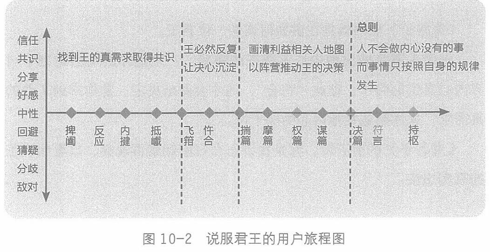

第十章 认知战：从新主张到共识
把它们和最后单列的一篇《持枢》一起画出来，就是一幅说服君王的用户旅程图 (见图10-2)。

这十二个节点的中心是哪里呢? 是第十一，《决篇》——让君王做决定，让共识达成，让基于共识的行动发生。
因为认知战的目的，就是改变对方的认知和行动。前面十个节点，是不断去试探君王真实的想法到底是什么，然后谋划局面，让种子发芽，让君王表态，让国家行动。
放到今天，就是我们去销售，去说服，最后让对方决定购买我们的产品。
以终为始，一切以推动最后的“决”来谋布。
我们接着再看，《鬼谷子》全书最核心的一个字是什么? 是“符”。
今天很多日用而不知的字词，都来自古人深入的思考。比如“符合”这个词。古代君主传令给自己的军官，军官怎么知道这条命令是真的? 传令人拿着一个符，和军官手里的符一对，两个能合上，就说明命令可信，军官的力量可以被持符的传令人调遣。
273